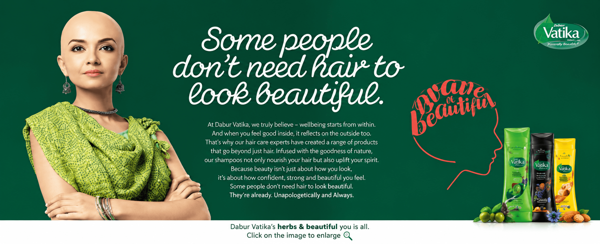
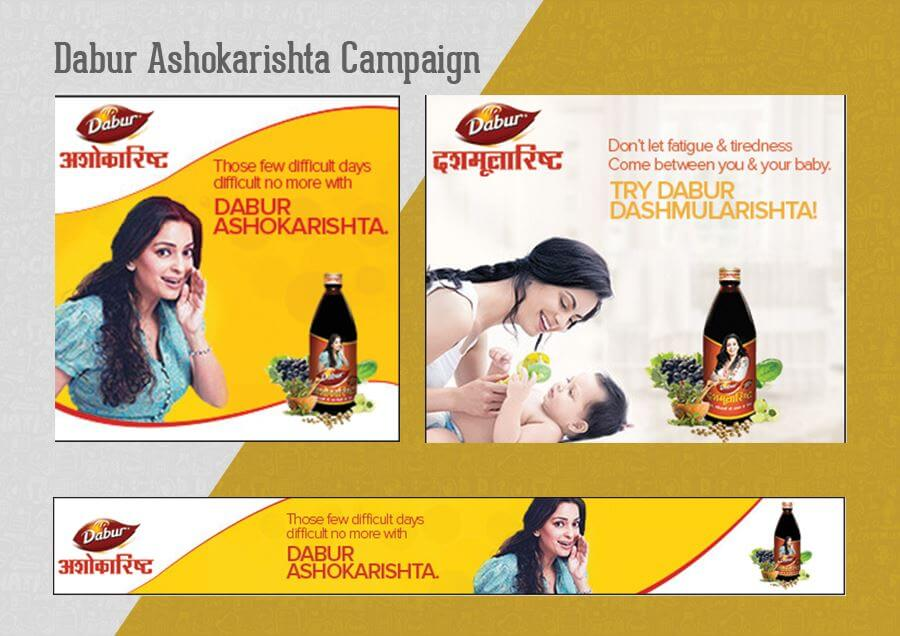
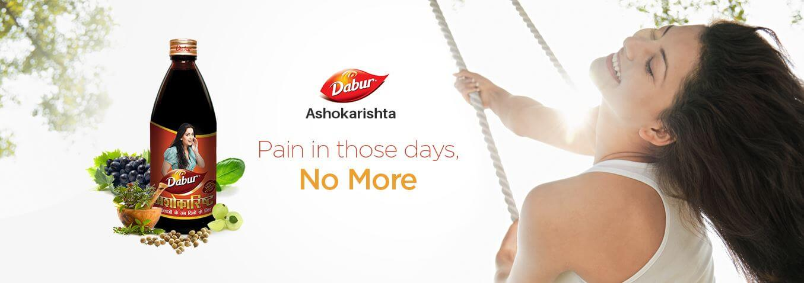

Each message needed to feel specific and useful without becoming crowded, clinical or difficult to understand.
← Back to workUseful information.
Dabur · Women-Focused Digital Campaign
Useful information.
Meaningful participation.

Project overview
Different needs.
One clear digital system.
The work connected product education with participation-led storytelling for women across life stages.
Benefit-led GDN communication made the Ashokarishta and Dashmularishta messages immediate, while a responsive experience created a simple route to discover stories, participate and nominate.
- Communication
- Benefit-led GDNs
- Experience
- Responsive website
- Action
- Enter + Nominate
- Foundation
- SEO-ready content
The challenge
Handle personal subjects.
Without losing clarity.
Awareness had to lead naturally into a mobile-friendly entry or nomination journey that felt inviting and easy to complete.
The communication model
Inform with clarity.
Invite with empathy.
Product awareness
Make the benefit instantly understandable.
Focused GDN creative used one recognisable concern, one product message and one direct takeaway.Community participation
Make every story feel worth sharing.
The digital journey gave people a clear way to discover the initiative, participate or nominate someone.The awareness work
One message.
Made easy to recognise.
Each execution gives the product idea room to land, using direct copy, human context and an unmistakable brand presence.


The participation story
Beauty beyond hair.
Courage beyond convention.
Vatika’s Brave & Beautiful initiative placed women’s strength at the centre of the message. The experience was designed to turn awareness into action through story discovery, participation and nomination.
- A clear campaign purpose above the fold
- Simple online application and nomination routes
- Responsive storytelling across devices
- Search-friendly campaign information

The participation journey
From recognition.
To a completed entry.
- 01
Discover
Campaign communication introduces the purpose in a single glance.
- 02
Understand
Concise information explains why and how to take part.
- 03
Participate
A direct mobile-friendly route supports entry or nomination.
- 04
Share
Story-led content helps participation travel through social channels.
The outcome
A campaign system.
Built around real action.
The work balanced useful product communication with a more human invitation to participate—giving every message a role and every interaction a clear next step.
Clearer awareness
Focused creative made individual messages easier to recognise.
Lower friction
Responsive entry routes supported participation on smaller screens.
Human relevance
Stories and nominations transformed attention into involvement.
Communication people can understand.Participation people can complete.
Have a story worth activating?